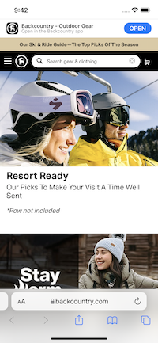

Contrast
Inductive Automation
www.inductiveautomation.comInductive Automation uses contrast very well. They utlize many different colors in their site and no matter the background color or image the text is easy to read. In addition to the foreground and background colors they also exemplify ccontrast through their font sizes and styles. Your eyes are drawn quickly to the "Built For Everyone" text at the center of the page because of its size. The sans serif font they use truly makes the text pop.
White Space
Backcountry
www.backcountry.com Backcountry utilizes white space to break up the page and draw your eyes to certain parts. The menu and search bars are clear places to go on the home page and the white block with text (also good use of contrast) helps to break up the various images used. The white space also helps to exemplify their snow sports theme.
Hick's Law
Netflix
www.netflix.comI think that Netflix did an excellent job of incorporating the ideas behind Hick's Law into their home page. When you first visit Netflix you have three options. Sign in, sign up, or change the language. The third option is not terribly relevant but the other two exemplify the company's (and most companies) business goals--get people to pay for their service. There are other options as you scroll down but when you first login the choices are limited so as to help you make a decision.